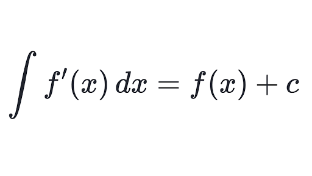
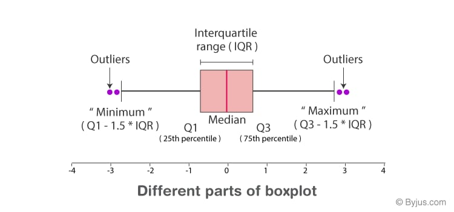
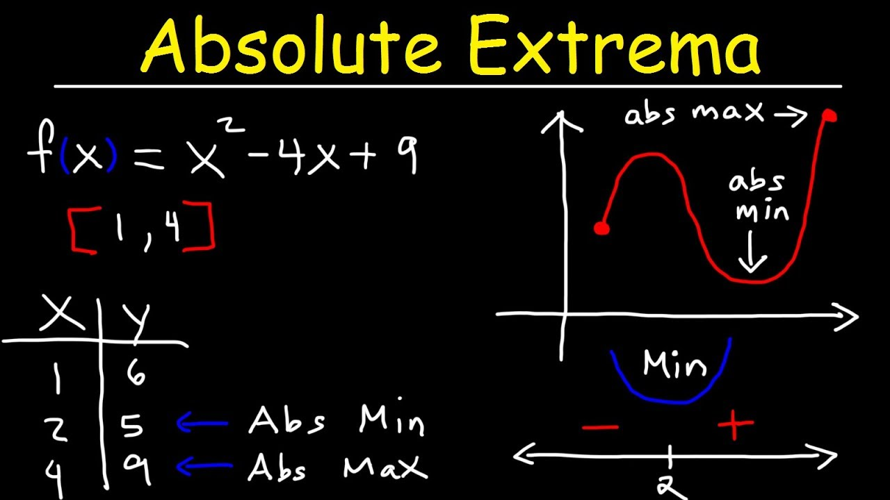

A derivative in calculus is the instantaneous rate of change of a function with respect to another variable. Differentiation is the process of finding the derivative of a function. The derivative of a function is same as the slope of the tangent, rate of change

The definite integral f(x) is a number that defines the area under the curves within the specified limits. It has an upper limit and lower limit and it gives a definite answer. Whereas the indefinite integral f(x) is a function and it has no upper and lower limits.

A data distribution is a function or a listing which shows all the possible values (or intervals) of the data. It also (and this is important) tells you how often each value occurs. Often, the data in a distribution will be ordered from smallest to largest, and graphs and charts allow you to easily see both the values and the frequency with which they appear.

An extremum (or extreme value) of a function is a point at which a maximum or minimum value of the function is obtained in some interval. A local extremum (or relative extremum) of a function is the point at which a maximum or minimum value of the function in some open interval containing the point is obtained.
A derivative in calculus is the instantaneous rate of change of a function with respect to another variable. Differentiation is the process of finding the derivative of a function. The derivative of a function is same as the slope of the tangent, rate of change
The definite integral f(x) is a number that defines the area under the curves within the specified limits. It has an upper limit and lower limit and it gives a definite answer. Whereas the indefinite integral f(x) is a function and it has no upper and lower limits.
A data distribution is a function or a listing which shows all the possible values (or intervals) of the data. It also (and this is important) tells you how often each value occurs. Often, the data in a distribution will be ordered from smallest to largest, and graphs and charts allow you to easily see both the values and the frequency with which they appear.
Five Numbers Summary:
⚫ Median ⚫ Lower Quartile ⚫ Upper Quartile ⚫ minimum ⚫ maximum
An extremum (or extreme value) of a function is a point at which a maximum or minimum value of the function is obtained in some interval. A local extremum (or relative extremum) of a function is the point at which a maximum or minimum value of the function in some open interval containing the point is obtained.